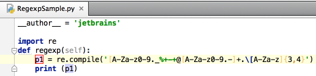

You can easily rename your local variables with automatic correction of all places where they are used.
To try it, place the caret at the variable you want to rename, and press &shortcut:RenameElement; (Refactor | Rename). Type the new name in the popup window that appears, or select one of the suggested names, and press Enter.
